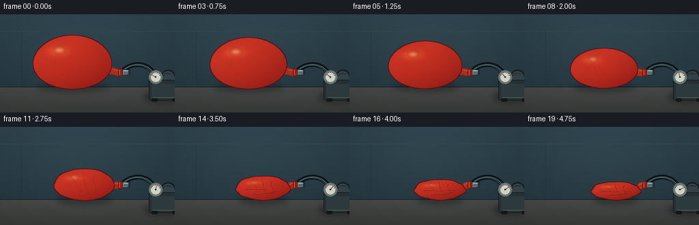
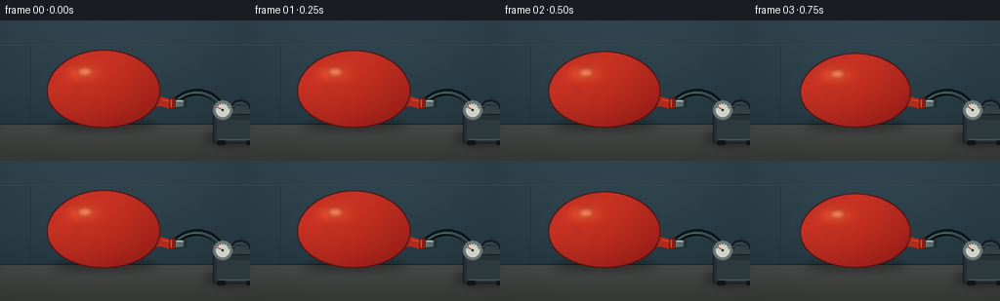

CODING AGENTS AS PIXEL WORLD MODELS
traex/GPT-5.6-Sol · mechanics_0024
点击播放 · 原生 RGB 像素
逐轮保存的候选
回放视频、检查图与代码变化。
每份候选均可单独播放。实际图片检查记录在下方工具轨迹中。
候选 01播放与检查图
点击播放 · 原生 RGB 像素


展开代码变化
--- 上一保存版本
+++ 本次保存版本
@@ -0,0 +1,231 @@
+from pathlib import Path
+import math
+import numpy as np
+from PIL import Image, ImageDraw, ImageFilter
+import artifact_io
+
+# Pure PIL/numpy rendering of a fixed-camera laboratory time lapse.
+W, H, N = 256, 144, 20
+S = 4
+WW, HH = W*S, H*S
+
+
+def sp(points):
+ return [(int(round(x*S)), int(round(y*S))) for x, y in points]
+
+
+def bezier(p0, p1, p2, p3, n=40):
+ out = []
+ for t in np.linspace(0.0, 1.0, n):
+ u = 1.0-t
+ out.append((u**3*p0[0] + 3*u*u*t*p1[0] + 3*u*t*t*p2[0] + t**3*p3[0],
+ u**3*p0[1] + 3*u*u*t*p1[1] + 3*u*t*t*p2[1] + t**3*p3[1]))
+ return out
+
+
+def line_curve(draw, points, fill, width):
+ # Catmull-like smooth chain using dense quadratic interpolation
+ dense=[]
+ if len(points)==4:
+ dense=bezier(*points, n=60)
+ else:
+ for a,b in zip(points[:-1], points[1:]):
+ for t in np.linspace(0,1,10,endpoint=False):
+ dense.append((a[0]*(1-t)+b[0]*t,a[1]*(1-t)+b[1]*t))
+ dense.append(points[-1])
+ draw.line(sp(dense), fill=fill, width=max(1,int(width*S)), joint='curve')
+
+
+def rounded(draw, box, radius, fill, outline=None, width=1):
+ b=tuple(int(v*S) for v in box)
+ draw.rounded_rectangle(b, radius=int(radius*S), fill=fill, outline=outline, width=max(1,int(width*S)))
+
+
+def smoothstep(x):
+ x=max(0.0,min(1.0,x))
+ return x*x*(3-2*x)
+
+# Stable background texture: no flicker in this time lapse.
+rng = np.random.default_rng(2402)
+yy, xx = np.mgrid[0:HH, 0:WW]
+# Cool studio wall, brightest behind the subject.
+wall = np.zeros((HH,WW,3), dtype=np.float32)
+vertical = yy/HH
+rad = np.sqrt(((xx-WW*.43)/(WW*.8))**2 + ((yy-HH*.38)/(HH*.9))**2)
+wall[:,:,0] = 30 + 14*(1-vertical) + 8*np.clip(1-rad,0,1)
+wall[:,:,1] = 47 + 17*(1-vertical) + 9*np.clip(1-rad,0,1)
+wall[:,:,2] = 54 + 20*(1-vertical) + 10*np.clip(1-rad,0,1)
+noise = rng.normal(0, 0.8, (HH,WW,1))
+wall += noise
+wall = np.clip(wall,0,255).astype(np.uint8)
+
+frames=[]
+for fi in range(N):
+ t=fi/(N-1)
+ # Deliberately even time-lapse progression, softened at beginning/end.
+ q=smoothstep(t)
+ img=Image.fromarray(wall.copy(), 'RGB')
+ d=ImageDraw.Draw(img)
+
+ # Faint wall panel lines and bench back edge.
+ d.line(sp([(0,25),(256,25)]), fill=(53,70,76), width=S)
+ d.line(sp([(31,25),(31,104)]), fill=(34,50,56), width=max(1,S//2))
+ d.line(sp([(0,107),(256,107)]), fill=(16,27,31), width=2*S)
+
+ # Workbench with soft light gradient.
+ table=np.zeros((HH,WW,4),dtype=np.uint8)
+ tmask=yy>=107*S
+ ty=np.clip((yy/S-107)/37,0,1)
+ table[:,:,0]=(69-14*ty).astype(np.uint8)
+ table[:,:,1]=(72-15*ty).astype(np.uint8)
+ table[:,:,2]=(70-15*ty).astype(np.uint8)
+ table[:,:,3]=(tmask*255).astype(np.uint8)
+ img=Image.alpha_composite(img.convert('RGBA'),Image.fromarray(table,'RGBA'))
+
+ # Broad apparatus/balloon contact shadows.
+ shadow=Image.new('RGBA',(WW,HH),(0,0,0,0)); sd=ImageDraw.Draw(shadow)
+ cx=106+28*q; cy=70+23*q
+ rx=57-22*q; ry=39-27*q
+ # The shadow tightens and moves right as the envelope empties.
+ sd.ellipse(tuple(int(v*S) for v in (cx-rx*.93,101, cx+rx*.96,114)), fill=(0,0,0,75))
+ sd.ellipse(tuple(int(v*S) for v in (209,112,267,130)), fill=(0,0,0,78))
+ shadow=shadow.filter(ImageFilter.GaussianBlur(4.0*S))
+ img=Image.alpha_composite(img,shadow)
+ d=ImageDraw.Draw(img)
+
+ # Vacuum pump at right, intentionally cropped by frame like a real bench setup.
+ d.polygon(sp([(219,94),(230,87),(264,89),(271,96),(260,101),(222,101)]), fill=(53,67,72,255))
+ d.line(sp([(221,95),(260,98),(269,94)]), fill=(93,105,107,255), width=S)
+ rounded(d,(218,96,267,126),3,(39,50,54,255),(19,28,31,255),1)
+ d.polygon(sp([(222,102),(264,102),(264,123),(222,123)]), fill=(46,59,63,255))
+ d.line(sp([(224,122),(263,122)]), fill=(88,93,89,255), width=S)
+ # Rubber feet.
+ rounded(d,(222,123,231,128),2,(18,23,24,255))
+ rounded(d,(252,123,261,128),2,(18,23,24,255))
+ # Top carrying handle behind gauge.
+ line_curve(d,[(238,90),(239,80),(254,80),(255,91)],(25,33,36,255),4)
+ line_curve(d,[(239,89),(240,82),(253,82),(254,91)],(80,91,94,255),1)
+
+ # Hose, behind the balloon and gauge. A specular edge makes it read as tubing.
+ hosepts=[(178,84),(194,68),(218,70),(228,91)]
+ line_curve(d,hosepts,(10,19,22,255),7)
+ line_curve(d,hosepts,(62,84,89,255),2)
+ line_curve(d,[(180,82),(195,70),(216,72),(225,91)],(111,131,133,120),.7)
+
+ # Vacuum gauge. Needle rotates as pressure drops, a secondary time-lapse cue.
+ d.ellipse(tuple(int(v*S) for v in (218,82,238,102)), fill=(19,27,30,255), outline=(108,119,120,255), width=2*S)
+ d.ellipse(tuple(int(v*S) for v in (220,84,236,100)), fill=(210,214,201,255), outline=(115,124,120,255), width=S)
+ # Tick marks.
+ for a in np.linspace(math.radians(205),math.radians(335),7):
+ x1,y1=228+6.2*math.cos(a),92+6.2*math.sin(a)
+ x2,y2=228+7.2*math.cos(a),92+7.2*math.sin(a)
+ d.line(sp([(x1,y1),(x2,y2)]),fill=(45,53,51,255),width=max(1,S))
+ ang=math.radians(210+120*q)
+ d.line(sp([(228,92),(228+6.2*math.cos(ang),92+6.2*math.sin(ang))]), fill=(174,47,35,255), width=S)
+ d.ellipse(tuple(int(v*S) for v in (226.8,90.8,229.2,93.2)),fill=(38,43,41,255))
+
+ # Metallic suction nozzle in front of hose, behind the balloon neck.
+ rounded(d,(174,80.5,188,89.5),3,(116,132,134,255),(24,38,42,255),1)
+ d.rectangle(tuple(int(v*S) for v in (181,82,190,88)),fill=(90,107,110,255))
+ d.line(sp([(181,82.5),(188,82.5)]),fill=(200,212,210,255),width=S)
+ d.rectangle(tuple(int(v*S) for v in (188,81,191,89)),fill=(34,47,50,255))
+
+ # Balloon neck: stretched over an airtight barbed nozzle. It remains sealed while shrinking.
+ join_u=(cx+rx*.72, cy+ry*.16)
+ join_l=(cx+rx*.60, cy+ry*.43)
+ neck_poly=[join_u,(165+3*q,78+4*q),(173.5,80.5),(179,81.5),(179,89),(173,90.5),(165+3*q,88+5*q),join_l]
+ neckmask=Image.new('L',(WW,HH),0); nd=ImageDraw.Draw(neckmask)
+ nd.polygon(sp(neck_poly),fill=255)
+ neckrgba=Image.new('RGBA',(WW,HH),(177,43,28,0)); neckrgba.putalpha(neckmask)
+ img=Image.alpha_composite(img,neckrgba)
+ d=ImageDraw.Draw(img)
+ # Rubber sealing collar/lip.
+ rounded(d,(173.2,79.5,179.8,91),2,(143,31,23,255),(91,24,22,255),1)
+ d.line(sp([(175,81),(175,89)]),fill=(234,91,54,220),width=S)
+
+ # Balloon envelope. Harmonic boundary distortion gradually introduces limp folds.
+ cr=max(0.0,(q-.30)/.70)
+ pts=[]
+ for k,th in enumerate(np.linspace(0,2*math.pi,240,endpoint=False)):
+ # Keep perturbation coherent across frames; only its amplitude grows.
+ wob=(0.030*math.sin(5*th+0.7)+0.018*math.sin(9*th-0.5)+0.010*math.sin(13*th+1.2))*cr
+ # A slightly pear-shaped inflated balloon; lower rubber sags subtly.
+ pear=1 + 0.055*math.sin(th) * (1-.45*q)
+ x=cx + rx*math.cos(th)*(pear+wob)
+ y=cy + ry*math.sin(th)*(1+wob*.75)
+ # Deflated lower envelope settles on the bench.
+ if cr>0 and y>cy:
+ y += cr*1.5*(math.sin(th)**2)
+ pts.append((x,y))
+ mask=Image.new('L',(WW,HH),0); md=ImageDraw.Draw(mask)
+ md.polygon(sp(pts),fill=255)
+ # Anti-aliased mask already at 4x; feather only microscopically.
+ mask=mask.filter(ImageFilter.GaussianBlur(.18*S))
+
+ # Dark rubber edge.
+ expanded=mask.filter(ImageFilter.MaxFilter(2*S+1))
+ edge=np.asarray(expanded,dtype=np.int16)-np.asarray(mask,dtype=np.int16)
+ edgeim=Image.new('RGBA',(WW,HH),(83,17,18,0)); edgeim.putalpha(Image.fromarray(np.clip(edge,0,255).astype(np.uint8)))
+ img=Image.alpha_composite(img,edgeim)
+
+ # Rich red-orange latex shading and coherent fine texture.
+ Y,X=np.mgrid[0:HH,0:WW]
+ nx=(X/S-cx)/max(rx,1); ny=(Y/S-cy)/max(ry,1)
+ light=np.clip(.72 - .30*nx - .38*ny,0,1)
+ rim=np.clip(1-(nx*nx+ny*ny),0,1)
+ # broad overhead reflection
+ hi=np.exp(-(((nx+.36)/.34)**2+((ny+.42)/.24)**2)*2.0)
+ base=np.empty((HH,WW,4),dtype=np.uint8)
+ fixedgrain=(np.sin(X*.31)+np.sin(Y*.19+X*.07))*0.7
+ base[:,:,0]=np.clip(142+54*light+36*hi+10*rim+fixedgrain,0,255)
+ base[:,:,1]=np.clip(25+24*light+34*hi+4*rim,0,255)
+ base[:,:,2]=np.clip(22+13*light+15*hi,0,255)
+ base[:,:,3]=np.asarray(mask)
+ img=Image.alpha_composite(img,Image.fromarray(base,'RGBA'))
+
+ # Main glossy reflection, compressed with the balloon.
+ gloss=Image.new('RGBA',(WW,HH),(0,0,0,0)); gd=ImageDraw.Draw(gloss)
+ gx=cx-rx*.31; gy=cy-ry*.42
+ gd.ellipse(tuple(int(v*S) for v in (gx-rx*.16,gy-ry*.15,gx+rx*.12,gy+ry*.09)),fill=(255,194,139,108))
+ gd.ellipse(tuple(int(v*S) for v in (cx-rx*.53,cy-ry*.05,cx-rx*.47,cy+ry*.14)),fill=(255,172,118,50))
+ gloss=gloss.filter(ImageFilter.GaussianBlur(2.2*S))
+ gloss.putalpha(Image.composite(gloss.getchannel('A'),Image.new('L',(WW,HH),0),mask))
+ img=Image.alpha_composite(img,gloss)
+
+ # Wrinkles appear progressively as slack develops; all are clipped to the envelope.
+ if cr>0.03:
+ wrinkles=Image.new('RGBA',(WW,HH),(0,0,0,0)); wd=ImageDraw.Draw(wrinkles)
+ alpha=int(35+100*cr)
+ width=max(.45,.7+cr*.45)
+ curves=[
+ [(cx-rx*.48,cy-ry*.53),(cx-rx*.27,cy-ry*.23),(cx-rx*.32,cy+ry*.17),(cx-rx*.08,cy+ry*.52)],
+ [(cx-rx*.06,cy-ry*.76),(cx+rx*.02,cy-ry*.31),(cx-rx*.03,cy+.05*ry),(cx+rx*.16,cy+ry*.66)],
+ [(cx+rx*.35,cy-ry*.58),(cx+rx*.20,cy-ry*.24),(cx+rx*.45,cy+.10*ry),(cx+rx*.36,cy+ry*.57)],
+ [(cx-rx*.66,cy+ry*.15),(cx-rx*.34,cy+ry*.04),(cx-rx*.10,cy+ry*.22),(cx+rx*.12,cy+ry*.13)],
+ [(cx-rx*.36,cy+ry*.67),(cx-rx*.05,cy+ry*.43),(cx+rx*.20,cy+ry*.61),(cx+rx*.51,cy+ry*.30)],
+ [(cx+rx*.12,cy-ry*.42),(cx+rx*.30,cy-ry*.16),(cx+rx*.18,cy+ry*.03),(cx+rx*.60,cy+ry*.14)],
+ ]
+ count=min(len(curves),1+int(cr*6))
+ for j,c in enumerate(curves[:count]):
+ line_curve(wd,c,(82,12,18,alpha),width)
+ # fine highlight on one side gives the fold dimensionality
+ c2=[(x-0.7,y-0.55) for x,y in c]
+ line_curve(wd,c2,(255,112,73,int(alpha*.45)),max(.35,width*.5))
+ wrinkles.putalpha(Image.composite(wrinkles.getchannel('A'),Image.new('L',(WW,HH),0),mask))
+ img=Image.alpha_composite(img,wrinkles)
+
+ # Small specular edge on neck after body rendering.
+ d=ImageDraw.Draw(img)
+ d.line(sp([(166+2*q,81+4*q),(173,82.5)]),fill=(229,83,51,180),width=S)
+
+ # Very subtle fixed lens vignette.
+ arr=np.asarray(img.convert('RGB')).astype(np.float32)
+ v=np.sqrt(((xx-WW/2)/(WW*.76))**2+((yy-HH/2)/(HH*.9))**2)
+ vig=np.clip(1-.11*np.maximum(v-.45,0),.86,1)[:,:,None]
+ arr=np.clip(arr*vig,0,255).astype(np.uint8)
+ final=Image.fromarray(arr,'RGB').resize((W,H),Image.Resampling.LANCZOS)
+ frames.append(np.asarray(final,dtype=np.uint8))
+
+frames=np.stack(frames,axis=0)
+artifact_io.save(frames,Path(__file__).resolve().parent)
+print('saved',frames.shape,frames.dtype)
可观测工具轨迹
实际执行的命令与返回图片。
命令 1exit 0
/bin/bash -lc "cat prompt.txt && printf '\\n---RULES---\\n' && cat GENERATION_RULES.md && printf '\\n---SPEC---\\n' && cat task_spec.json"
命令 2exit 0
/bin/bash -lc "find . -maxdepth 2 -type f -printf '%p\\n' | sort && printf '\\nTools:\\n' && command -v ffmpeg || true && command -v blender || true && command -v python3"
命令 3exit 0
/bin/bash -lc 'cat artifact_io.py'
命令 4exit 0
/bin/bash -lc "cat > generate.py <<'PY'
from pathlib import Path
import math
import numpy as np
from PIL import Image, ImageDraw, ImageFilter
import artifact_io
# Pure PIL/numpy rendering of a fixed-camera laboratory time lapse.
W, H, N = 256, 144, 20
S = 4
WW, HH = W*S, H*S
def sp(points):
return [(int(round(x*S)), int(round(y*S))) for x, y in points]
def bezier(p0, p1, p2, p3, n=40):
out = []
for t in np.linspace(0.0, 1.0, n):
u = 1.0-t
out.append((u**3*p0[0] + 3*u*u*t*p1[0] + 3*u*t*t*p2[0] + t**3*p3[0],
u**3*p0[1] + 3*u*u*t*p1[1] + 3*u*t*t*p2[1] + t**3*p3[1]))
return out
def line_curve(draw, points, fill, width):
# Catmull-like smooth chain using dense quadratic interpolation
dense=[]
if len(points)==4:
dense=bezier(*points, n=60)
else:
for a,b in zip(points[:-1], points[1:]):
for t in np.linspace(0,1,10,endpoint=False):
dense.append((a[0]*(1-t)+b[0]*t,a[1]*(1-t)+b[1]*t))
dense.append(points[-1])
draw.line(sp(dense), fill=fill, width=max(1,int(width*S)), joint='curve')
def rounded(draw, box, radius, fill, outline=None, width=1):
b=tuple(int(v*S) for v in box)
draw.rounded_rectangle(b, radius=int(radius*S), fill=fill, outline=outline, width=max(1,int(width*S)))
def smoothstep(x):
x=max(0.0,min(1.0,x))
return x*x*(3-2*x)
# Stable background texture: no flicker in this time lapse.
rng = np.random.default_rng(2402)
yy, xx = np.mgrid[0:HH, 0:WW]
# Cool studio wall, brightest behind the subject.
wall = np.zeros((HH,WW,3), dtype=np.float32)
vertical = yy/HH
rad = np.sqrt(((xx-WW*.43)/(WW*.8))**2 + ((yy-HH*.38)/(HH*.9))**2)
wall[:,:,0] = 30 + 14*(1-vertical) + 8*np.clip(1-rad,0,1)
wall[:,:,1] = 47 + 17*(1-vertical) + 9*np.clip(1-rad,0,1)
wall[:,:,2] = 54 + 20*(1-vertical) + 10*np.clip(1-rad,0,1)
noise = rng.normal(0, 0.8, (HH,WW,1))
wall += noise
wall = np.clip(wall,0,255).astype(np.uint8)
frames=[]
for fi in range(N):
t=fi/(N-1)
# Deliberately even time-lapse progression, softened at beginning/end.
q=smoothstep(t)
img=Image.fromarray(wall.copy(), 'RGB')
d=ImageDraw.Draw(img)
# Faint wall panel lines and bench back edge.
d.line(sp([(0,25),(256,25)]), fill=(53,70,76), width=S)
d.line(sp([(31,25),(31,104)]), fill=(34,50,56), width=max(1,S//2))
d.line(sp([(0,107),(256,107)]), fill=(16,27,31), width=2*S)
# Workbench with soft light gradient.
table=np.zeros((HH,WW,4),dtype=np.uint8)
tmask=yy>=107*S
ty=np.clip((yy/S-107)/37,0,1)
table[:,:,0]=(69-14*ty).astype(np.uint8)
table[:,:,1]=(72-15*ty).astype(np.uint8)
table[:,:,2]=(70-15*ty).astype(np.uint8)
table[:,:,3]=(tmask*255).astype(np.uint8)
img=Image.alpha_composite(img.convert('RGBA'),Image.fromarray(table,'RGBA'))
# Broad apparatus/balloon contact shadows.
shadow=Image.new('RGBA',(WW,HH),(0,0,0,0)); sd=ImageDraw.Draw(shadow)
cx=106+28*q; cy=70+23*q
rx=57-22*q; ry=39-27*q
# The shadow tightens and moves right as the envelope empties.
sd.ellipse(tuple(int(v*S) for v in (cx-rx*.93,101, cx+rx*.96,114)), fill=(0,0,0,75))
sd.ellipse(tuple(int(v*S) for v in (209,112,267,130)), fill=(0,0,0,78))
shadow=shadow.filter(ImageFilter.GaussianBlur(4.0*S))
img=Image.alpha_composite(img,shadow)
d=ImageDraw.Draw(img)
# Vacuum pump at right, intentionally cropped by frame like a real bench setup.
d.polygon(sp([(219,94),(230,87),(264,89),(271,96),(260,101),(222,101)]), fill=(53,67,72,255))
d.line(sp([(221,95),(260,98),(269,94)]), fill=(93,105,107,255), width=S)
rounded(d,(218,96,267,126),3,(39,50,54,255),(19,28,31,255),1)
d.polygon(sp([(222,102),(264,102),(264,123),(222,123)]), fill=(46,59,63,255))
d.line(sp([(224,122),(263,122)]), fill=(88,93,89,255), width=S)
# Rubber feet.
rounded(d,(222,123,231,128),2,(18,23,24,255))
rounded(d,(252,123,261,128),2,(18,23,24,255))
# Top carrying handle behind gauge.
line_curve(d,[(238,90),(239,80),(254,80),(255,91)],(25,33,36,255),4)
line_curve(d,[(239,89),(240,82),(253,82),(254,91)],(80,91,94,255),1)
# Hose, behind the balloon and gauge. A specular edge makes it read as tubing.
hosepts=[(178,84),(194,68),(218,70),(228,91)]
line_curve(d,hosepts,(10,19,22,255),7)
line_curve(d,hosepts,(62,84,89,255),2)
line_curve(d,[(180,82),(195,70),(216,72),(225,91)],(111,131,133,120),.7)
# Vacuum gauge. Needle rotates as pressure drops, a secondary time-lapse cue.
d.ellipse(tuple(int(v*S) for v in (218,82,238,102)), fill=(19,27,30,255), outline=(108,119,120,255), width=2*S)
d.ellipse(tuple(int(v*S) for v in (220,84,236,100)), fill=(210,214,201,255), outline=(115,124,120,255), width=S)
# Tick marks.
for a in np.linspace(math.radians(205),math.radians(335),7):
x1,y1=228+6.2*math.cos(a),92+6.2*math.sin(a)
x2,y2=228+7.2*math.cos(a),92+7.2*math.sin(a)
d.line(sp([(x1,y1),(x2,y2)]),fill=(45,53,51,255),width=max(1,S))
ang=math.radians(210+120*q)
d.line(sp([(228,92),(228+6.2*math.cos(ang),92+6.2*math.sin(ang))]), fill=(174,47,35,255), width=S)
d.ellipse(tuple(int(v*S) for v in (226.8,90.8,229.2,93.2)),fill=(38,43,41,255))
# Metallic suction nozzle in front of hose, behind the balloon neck.
rounded(d,(174,80.5,188,89.5),3,(116,132,134,255),(24,38,42,255),1)
d.rectangle(tuple(int(v*S) for v in (181,82,190,88)),fill=(90,107,110,255))
d.line(sp([(181,82.5),(188,82.5)]),fill=(200,212,210,255),width=S)
d.rectangle(tuple(int(v*S) for v in (188,81,191,89)),fill=(34,47,50,255))
# Balloon neck: stretched over an airtight barbed nozzle. It remains sealed while shrinking.
join_u=(cx+rx*.72, cy+ry*.16)
join_l=(cx+rx*.60, cy+ry*.43)
neck_poly=[join_u,(165+3*q,78+4*q),(173.5,80.5),(179,81.5),(179,89),(173,90.5),(165+3*q,88+5*q),join_l]
neckmask=Image.new('L',(WW,HH),0); nd=ImageDraw.Draw(neckmask)
nd.polygon(sp(neck_poly),fill=255)
neckrgba=Image.new('RGBA',(WW,HH),(177,43,28,0)); neckrgba.putalpha(neckmask)
img=Image.alpha_composite(img,neckrgba)
d=ImageDraw.Draw(img)
# Rubber sealing collar/lip.
rounded(d,(173.2,79.5,179.8,91),2,(143,31,23,255),(91,24,22,255),1)
d.line(sp([(175,81),(175,89)]),fill=(234,91,54,220),width=S)
# Balloon envelope. Harmonic boundary distortion gradually introduces limp folds.
cr=max(0.0,(q-.30)/.70)
pts=[]
for k,th in enumerate(np.linspace(0,2*math.pi,240,endpoint=False)):
# Keep perturbation coherent across frames; only its amplitude grows.
wob=(0.030*math.sin(5*th+0.7)+0.018*math.sin(9*th-0.5)+0.010*math.sin(13*th+1.2))*cr
# A slightly pear-shaped inflated balloon; lower rubber sags subtly.
pear=1 + 0.055*math.sin(th) * (1-.45*q)
x=cx + rx*math.cos(th)*(pear+wob)
y=cy + ry*math.sin(th)*(1+wob*.75)
# Deflated lower envelope settles on the bench.
if cr>0 and y>cy:
y += cr*1.5*(math.sin(th)**2)
pts.append((x,y))
mask=Image.new('L',(WW,HH),0); md=ImageDraw.Draw(mask)
md.polygon(sp(pts),fill=255)
# Anti-aliased mask already at 4x; feather only microscopically.
mask=mask.filter(ImageFilter.GaussianBlur(.18*S))
# Dark rubber edge.
expanded=mask.filter(ImageFilter.MaxFilter(2*S+1))
edge=np.asarray(expanded,dtype=np.int16)-np.asarray(mask,dtype=np.int16)
edgeim=Image.new('RGBA',(WW,HH),(83,17,18,0)); edgeim.putalpha(Image.fromarray(np.clip(edge,0,255).astype(np.uint8)))
img=Image.alpha_composite(img,edgeim)
# Rich red-orange latex shading and coherent fine texture.
Y,X=np.mgrid[0:HH,0:WW]
nx=(X/S-cx)/max(rx,1); ny=(Y/S-cy)/max(ry,1)
light=np.clip(.72 - .30*nx - .38*ny,0,1)
rim=np.clip(1-(nx*nx+ny*ny),0,1)
# broad overhead reflection
hi=np.exp(-(((nx+.36)/.34)**2+((ny+.42)/.24)**2)*2.0)
base=np.empty((HH,WW,4),dtype=np.uint8)
fixedgrain=(np.sin(X*.31)+np.sin(Y*.19+X*.07))*0.7
base[:,:,0]=np.clip(142+54*light+36*hi+10*rim+fixedgrain,0,255)
base[:,:,1]=np.clip(25+24*light+34*hi+4*rim,0,255)
base[:,:,2]=np.clip(22+13*light+15*hi,0,255)
base[:,:,3]=np.asarray(mask)
img=Image.alpha_composite(img,Image.fromarray(base,'RGBA'))
# Main glossy reflection, compressed with the balloon.
gloss=Image.new('RGBA',(WW,HH),(0,0,0,0)); gd=ImageDraw.Draw(gloss)
gx=cx-rx*.31; gy=cy-ry*.42
gd.ellipse(tuple(int(v*S) for v in (gx-rx*.16,gy-ry*.15,gx+rx*.12,gy+ry*.09)),fill=(255,194,139,108))
gd.ellipse(tuple(int(v*S) for v in (cx-rx*.53,cy-ry*.05,cx-rx*.47,cy+ry*.14)),fill=(255,172,118,50))
gloss=gloss.filter(ImageFilter.GaussianBlur(2.2*S))
gloss.putalpha(Image.composite(gloss.getchannel('A'),Image.new('L',(WW,HH),0),mask))
img=Image.alpha_composite(img,gloss)
# Wrinkles appear progressively as slack develops; all are clipped to the envelope.
if cr>0.03:
wrinkles=Image.new('RGBA',(WW,HH),(0,0,0,0)); wd=ImageDraw.Draw(wrinkles)
alpha=int(35+100*cr)
width=max(.45,.7+cr*.45)
curves=[
[(cx-rx*.48,cy-ry*.53),(cx-rx*.27,cy-ry*.23),(cx-rx*.32,cy+ry*.17),(cx-rx*.08,cy+ry*.52)],
[(cx-rx*.06,cy-ry*.76),(cx+rx*.02,cy-ry*.31),(cx-rx*.03,cy+.05*ry),(cx+rx*.16,cy+ry*.66)],
[(cx+rx*.35,cy-ry*.58),(cx+rx*.20,cy-ry*.24),(cx+rx*.45,cy+.10*ry),(cx+rx*.36,cy+ry*.57)],
[(cx-rx*.66,cy+ry*.15),(cx-rx*.34,cy+ry*.04),(cx-rx*.10,cy+ry*.22),(cx+rx*.12,cy+ry*.13)],
[(cx-rx*.36,cy+ry*.67),(cx-rx*.05,cy+ry*.43),(cx+rx*.20,cy+ry*.61),(cx+rx*.51,cy+ry*.30)],
[(cx+rx*.12,cy-ry*.42),(cx+rx*.30,cy-ry*.16),(cx+rx*.18,cy+ry*.03),(cx+rx*.60,cy+ry*.14)],
]
count=min(len(curves),1+int(cr*6))
for j,c in enumerate(curves[:count]):
line_curve(wd,c,(82,12,18,alpha),width)
# fine highlight on one side gives the fold dimensionality
c2=[(x-0.7,y-0.55) for x,y in c]
line_curve(wd,c2,(255,112,73,int(alpha*.45)),max(.35,width*.5))
wrinkles.putalpha(Image.composite(wrinkles.getchannel('A'),Image.new('L',(WW,HH),0),mask))
img=Image.alpha_composite(img,wrinkles)
# Small specular edge on neck after body rendering.
d=ImageDraw.Draw(img)
d.line(sp([(166+2*q,81+4*q),(173,82.5)]),fill=(229,83,51,180),width=S)
# Very subtle fixed lens vignette.
arr=np.asarray(img.convert('RGB')).astype(np.float32)
v=np.sqrt(((xx-WW/2)/(WW*.76))**2+((yy-HH/2)/(HH*.9))**2)
vig=np.clip(1-.11*np.maximum(v-.45,0),.86,1)[:,:,None]
arr=np.clip(arr*vig,0,255).astype(np.uint8)
final=Image.fromarray(arr,'RGB').resize((W,H),Image.Resampling.LANCZOS)
frames.append(np.asarray(final,dtype=np.uint8))
frames=np.stack(frames,axis=0)
artifact_io.save(frames,Path(__file__).resolve().parent)
print('saved',frames.shape,frames.dtype)
PY
python3 generate.py"命令 5exit 0
/bin/bash -lc "python3 - <<'PY'
from pathlib import Path
import numpy as np
p=Path('.')
a=np.load('pixels.npz')['pixels']
print('pixels',a.shape,a.dtype,'range',int(a.min()),int(a.max()))
print('frames',len(list((p/'frames').glob('*.png'))))
for f in ['generate.py','pixels.npz','index.html','inspection.png','transition_check.png']:
q=p/f; print(f,q.exists(),q.stat().st_size if q.exists() else 0)
PY"命令 6exit 0
/bin/bash -lc 'python3 -m py_compile generate.py'
视觉工具实际返回图片 1

保存候选 1 份；完成命令 6 次；可验证图片返回 1 张。原始 API 响应与完整日志保留在本地。